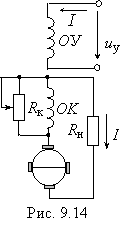

9.4.4. Электромашинный усилитель с поперечным полем
Эти машины используют в схемах автоматики для усиления управляющих сигналов, полученных от различных датчиков, сельсинов, поворотных трансформаторов и других устройств.
Электромашинный усилитель (ЭМУ) представляет собой специальный электрический генератор постоянного тока, выходная мощность которого может изменяться в широких пределах путём изменения мощности управления. Простейшим ЭМУ является обычный
ГПТ независимого возбуждения, на обмотку возбуждения которого подаётся
управляющий сигнал uу. Усиление мощности происходит за счёт механической энергии, поступающей от приводного двигателя.

Для увеличения коэффициента усиления в ЭМУ устанавливают несколько обмоток управления. На якорь устанавливают двойной комплект щёток: по поперечной и продольной осям (рис. 9.14). Щётки, установленные по поперечной оси, замыкаются накоротко, а к щёткам, расположенным по продольной оси, подключают нагрузку Rн. При подаче управляющего сигнала uу на независимую обмотку возбуждения ОУ и при вращении якоря в его обмотке между поперечными короткозамкнутыми щётками
индуктируется ЭДС; по обмотке якоря будет проходить ток, имеющий значительную величину и создающий значительно больший поперечный магнитный поток, чем поток Фв. Этот поток индуктирует ЭДС между продольными щётками, которая вызывает ток нагрузки I.
Из рассмотренного принципа действия ЭМУ с поперечным полем очевидно, что, изменяя небольшой ток Iв в обмотке управления, можно управлять значительным током I в цепи нагрузки (см. рис. 9.14). Магнитодвижущая сила, создаваемая током I нагрузки, направлена навстречу МДС обмотки управления ОУ, поэтому продольный магнитный поток якоря будет размагничивать машину. Для компенсации этой МДС на статоре ЭМУ помещают компенсационную обмотку ОК, которую включают последовательно с нагрузкой Rн. Для точного регулирования МДС обмотки ОК параллельно ей присоединяют шунтирующий реостат Rк.